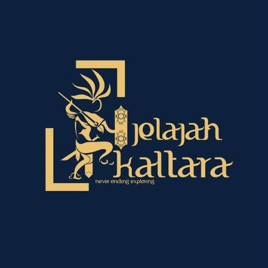
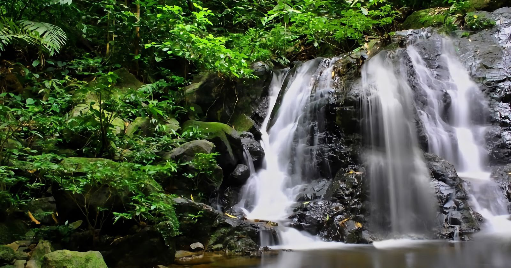
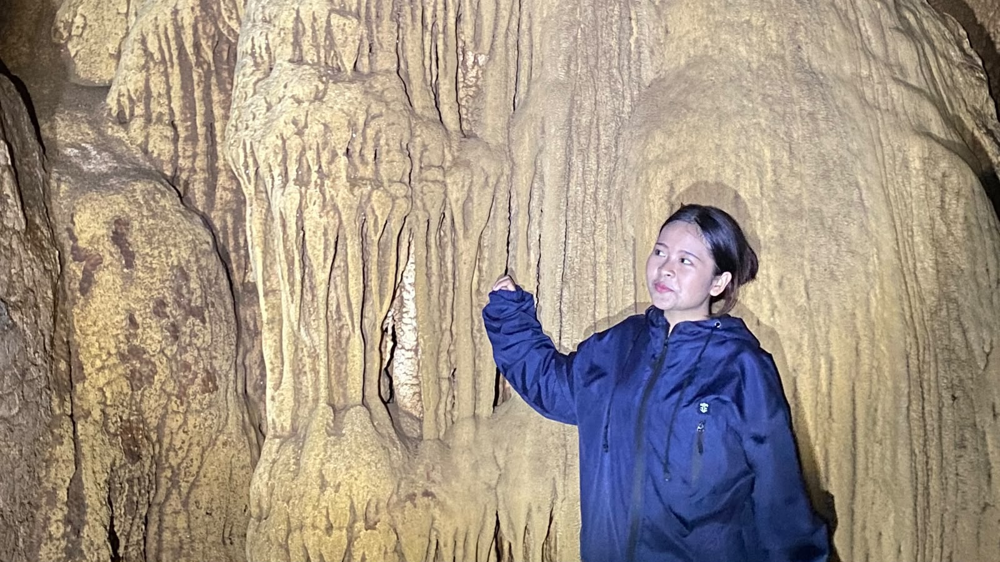
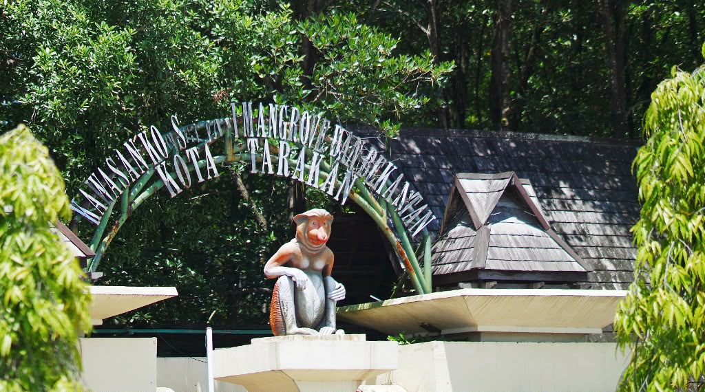

Provinsi Kalimantan Utara
Selamat datang di portal profil Dinas Pariwisata. Mengembangkan potensi destinasi wisata, ekonomi kreatif, serta pelestarian budaya daerah.
Dinas Pariwisata merupakan unsur pelaksana urusan pemerintahan di bidang pariwisata yang berkedudukan di bawah dan bertanggung jawab kepada Gubernur melalui Sekretaris Daerah.
"Terwujudnya Kalimantan Utara yang Berubah, Maju, dan Sejahtera melalui Sektor Pariwisata yang Unggul."
Membantu Kepala Daerah dalam melaksanakan urusan pemerintahan bidang pariwisata serta tugas pembantuan yang ditugaskan kepada daerah.
Perumusan kebijakan teknis di bidang destinasi, pemasaran, dan ekonomi kreatif.
Pelaksanaan koordinasi, pembinaan, dan fasilitasi pengembangan kepariwisataan.
Pemantauan, evaluasi, dan pelaporan pelaksanaan program kerja dinas.
Pelaksanaan administrasi kesekretariatan dinas secara akuntabel.
Unit kerja yang mendukung operasional dan pelayanan instansi
Mengelola administrasi umum, kepegawaian, keuangan, serta penyusunan program dan pelaporan dinas.
Menangani pengembangan daya tarik wisata, tata kelola kawasan, serta infrastruktur pendukung wisata.
Fokus pada promosi wisata daerah, penyelenggaraan event, serta kerja sama kemitraan pariwisata.
Membina pelaku ekonomi kreatif dan meningkatkan kompetensi sumber daya manusia pariwisata.
Galeri pesona wisata alam daerah Kalimantan Utara

Destinasi wisata alam bertingkat di kaki Gunung Rian Kabupaten Tana Tidung, Kalimantan Utara.

Didalamnya, kamu bakal disambut pilar-pilar stalakit kuno dan dinding kars yang membentuk relief alami selama ratusan tahun.

Hutan bakau seluas 21-22 hektare di tengah Kota Tarakan yang menjadi habitat bekantan.
Untuk informasi resmi mengenai layanan kepariwisataan, kunjungan kerja, atau koordinasi program, silakan hubungi kantor instansi pada jam kerja berikut:
Alamat Kantor
Jl. Rambutan, Tanjung Selor, Kabupaten Bulungan, Kalimantan Utara
Jam Operasional
Senin – Jumat, 07.30 – 16.00 WITA
Email Resmi
dispar@kaltaraprov.go.id